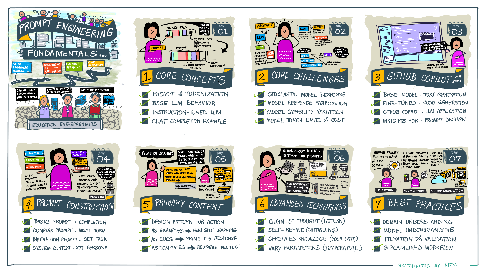
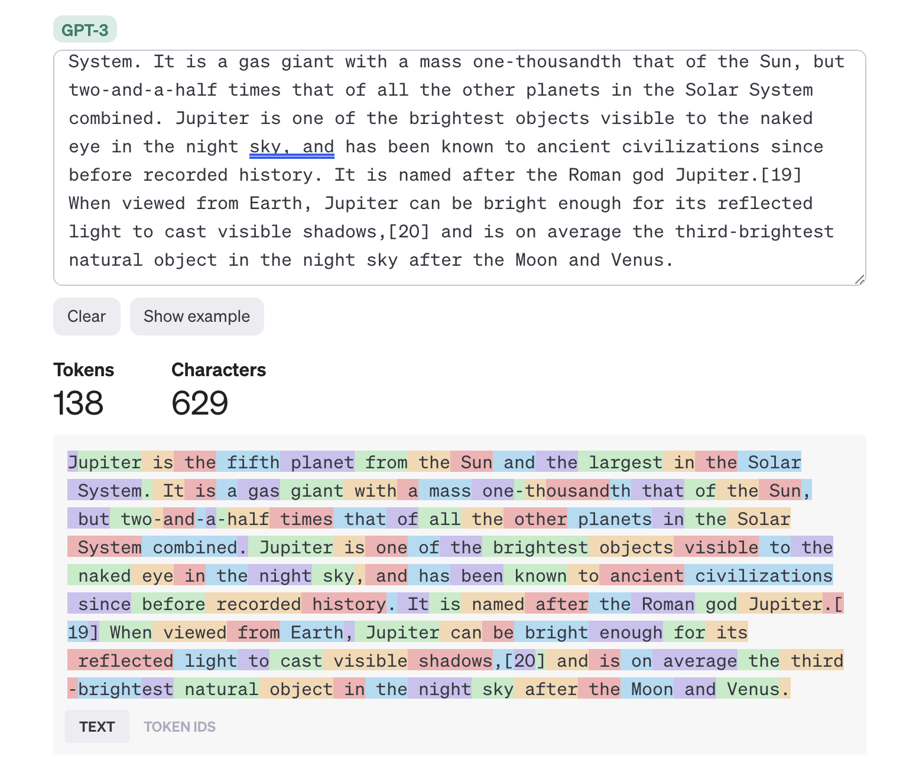
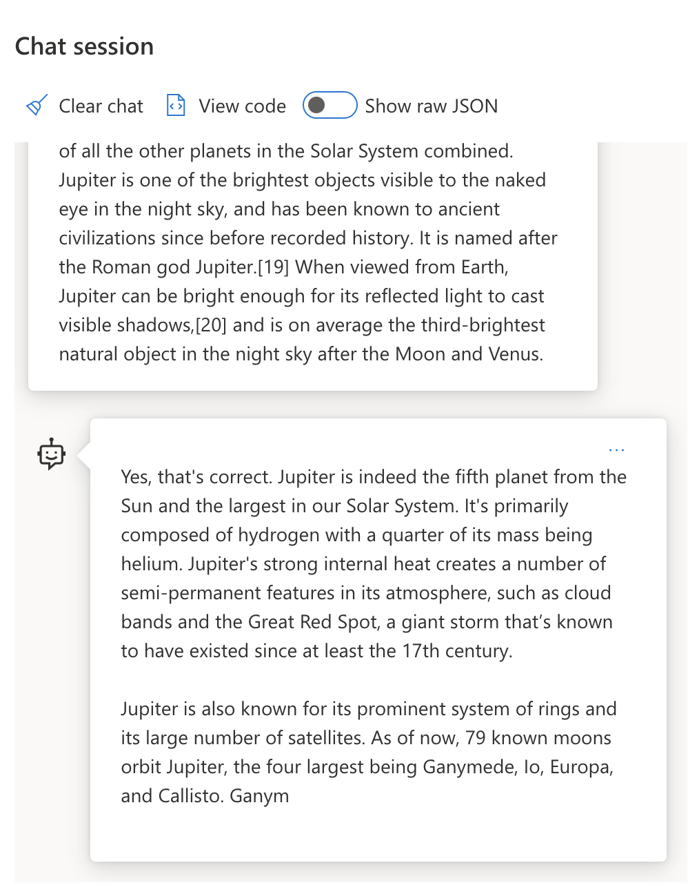
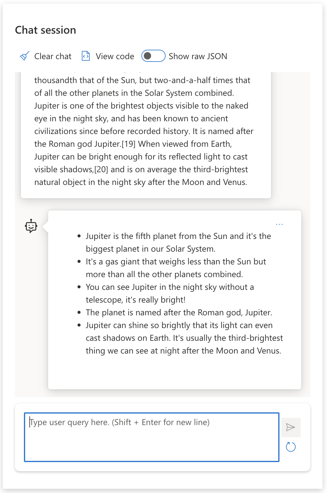
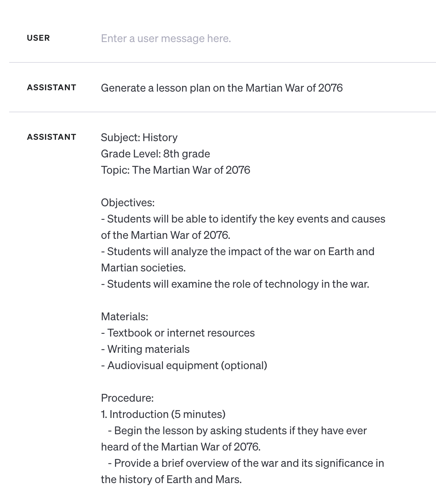
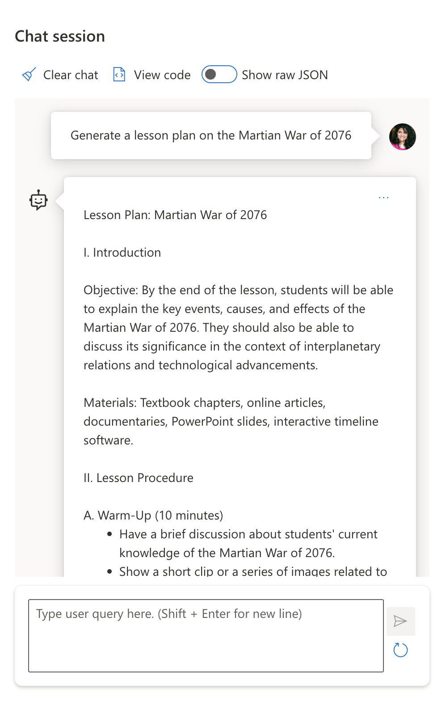
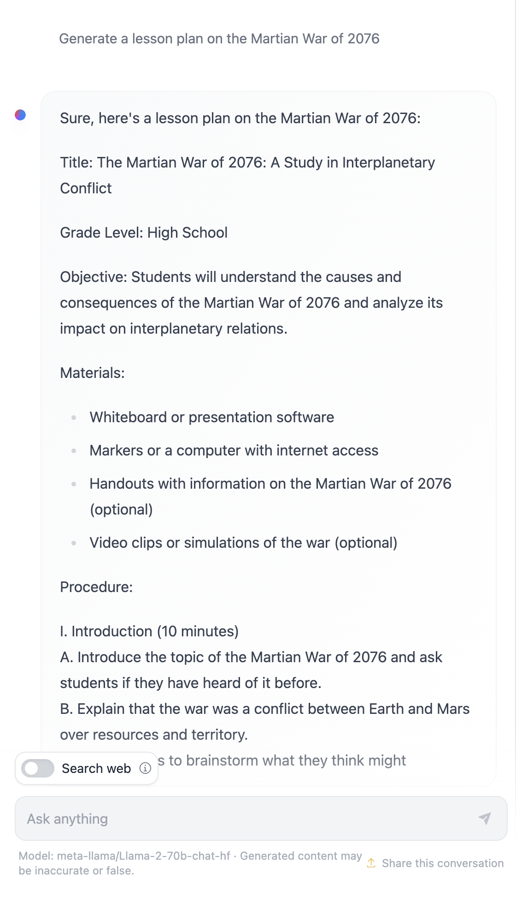

Diseña y optimiza tus instrucciones para obtener respuestas precisas, consistentes y de alta calidad de los modelos de lenguaje.
La IA Generativa puede crear nuevo contenido (texto, imágenes, audio, código) en respuesta a solicitudes del usuario, gracias a los Large Language Models (LLMs) como la familia GPT de OpenAI, entrenados con lenguaje natural y código.
Los usuarios interactúan con estos modelos mediante prompts: entradas de texto que el modelo usa para generar una completación. La calidad del prompt determina directamente la calidad de la respuesta.
Explicar qué es el Prompt Engineering, describir sus componentes y aplicar técnicas con ejemplos reales usando la API de OpenAI.
Prompt: entrada de texto al modelo.
Completación: respuesta generada.
Token: unidad mínima de texto procesada.
Administradores, docentes y estudiantes pueden diseñar prompts para análisis curricular, planes de clase y tutoría personalizada.

El Prompt Engineering es el proceso de diseñar y optimizar entradas de texto (prompts) para obtener respuestas consistentes y de calidad para un objetivo de aplicación y modelo determinado. Es un proceso de dos pasos:
Crear el prompt original adaptado al modelo y al objetivo específico de la aplicación.
Mejorar el prompt en ciclos sucesivos para elevar la calidad de la respuesta mediante prueba y error.
Un LLM percibe un prompt como una secuencia de tokens. Distintos modelos tokenizan el mismo texto de maneras diferentes. Dado que los LLMs se entrenan sobre tokens (no texto crudo), la tokenización impacta directamente la calidad de la respuesta generada.

Con Gemini puedes contar tokens antes de enviar el prompt, sin gastar cuota de generación:
python — gemini_prompt_engineering.ipynb · Ejercicio 1import os
from dotenv import load_dotenv
from google import genai
from google.genai import types
load_dotenv()
# Inicializamos el cliente con la API key de Gemini
client = genai.Client(api_key=os.getenv("GEMINI_API_KEY"))
MODELO = "gemini-2.5-flash-lite"
text = """
Júpiter es el quinto planeta desde el Sol y el más grande del Sistema Solar.
Es un gigante gaseoso con una masa de una milésima parte de la del Sol,
pero dos veces y media la de todos los demás planetas del Sistema Solar combinados.
Júpiter es uno de los objetos más brillantes visibles a simple vista en el cielo nocturno
y ha sido conocido por las civilizaciones antiguas desde antes de la historia escrita.
Recibe su nombre del dios romano Júpiter.
"""
# Contamos tokens sin consumir cuota de generación
resultado = client.models.count_tokens(
model=MODELO,
contents=text
)
print(f"Número de tokens: {resultado.total_tokens}")
Número de tokens: 109tiktoken (que opera localmente), Gemini llama directamente a la API para contar tokens con el mismo tokenizador que usará al generar. Esto garantiza exactitud, especialmente con textos en español u otros idiomas.
La función principal de un LLM base es predecir el siguiente token en la secuencia. Estos modelos no entienden el significado de las palabras; identifican patrones estadísticos y los continúan.

Los modelos ajustados con instrucciones parten del modelo base y se refinan con ejemplos de pares entrada/salida mediante técnicas como RLHF (Reinforcement Learning with Human Feedback). Aprenden a seguir instrucciones y aprender del feedback, produciendo respuestas más prácticas y relevantes.

Los LLMs actuales presentan desafíos que dificultan obtener respuestas confiables sin esfuerzo en el diseño del prompt:
El mismo prompt puede producir respuestas diferentes en distintos modelos o versiones, o incluso en el mismo modelo en momentos distintos.
Los modelos pueden generar información incorrecta o inexistente porque su conocimiento está limitado a los datos de entrenamiento.
Modelos más nuevos ofrecen más capacidades pero también nuevas particularidades, costos y complejidades a considerar.
Usamos el término "fabricación" (en lugar de "alucinación") para describir cuando los LLMs generan información incorrecta. El término es más preciso y evita la antropomorfización del comportamiento de la máquina.
Ejemplo: al pedir un plan de lección sobre la "Guerra de Marte de 2076":



Prompt enviado: genera un plan de lección sobre la Guerra Marciana de 2076.
GitHub Copilot es tu "AI Pair Programmer": convierte prompts de texto en completaciones de código integradas directamente en el entorno de desarrollo (VS Code, JetBrains, etc.). Su evolución es un ejemplo real de cómo el Prompt Engineering mejora productos de IA en producción.
La primera versión se basó en OpenAI Codex. Los ingenieros detectaron rápidamente que necesitaban técnicas de PE más avanzadas para mejorar la calidad y relevancia del código generado.
Copilot analiza el archivo activo, los archivos abiertos en pestañas y los comentarios del código para construir un prompt rico en contexto que guía al modelo hacia sugerencias relevantes.
En julio de 2023 debutaron un modelo que va más allá de Codex, con sugerencias más rápidas, precisas y conscientes del proyecto completo, no solo del archivo actual.
El equipo documentó su aprendizaje públicamente: desde mejorar la comprensión del código hasta construir apps LLM empresariales, mostrando que el PE es un proceso iterativo permanente.
Copilot usa plantillas internas, contenido primario (código circundante) y contenido secundario (imports, estructura del proyecto) para enriquecer cada prompt enviado al modelo.
Su historia demuestra que construir una app LLM exitosa requiere: fine-tuning del modelo, PE disciplinado, feedback de usuarios reales y mejora continua del pipeline de prompts.
Una entrada de texto simple sin contexto adicional. El modelo predice la continuación basándose en patrones de entrenamiento.
| Prompt (Entrada) | Completación (Salida) |
|---|---|
| oh say can you see | Respuesta real de Gemini 2.5 Flash: "Oh, say can you see" are the first words of "The Star-Spangled Banner," the national anthem of the United States of America. The full first line is: "Oh, say can you see, by the dawn's early light," It's a very famous and recognizable opening to a patriotic song. |
| En un lugar de La Mancha, de cuyo nombre | Comportamiento esperado (base LLM): …no quiero acordarme, no ha mucho tiempo que vivía un hidalgo de los de lanza en astillero, adarga antigua, rocín flaco y galgo corredor. ⚠️ Un LLM instruction-tuned como Gemini puede responder de forma conversacional en lugar de continuar verbatim. Ver sección de Tokenización. |
| To be or not to be, | Comportamiento esperado (base LLM): …that is the question: Whether 'tis nobler in the mind to suffer the slings and arrows of outrageous fortune, or to take arms against a sea of troubles… |
Un prompt complejo utiliza la API de Chat Completion para construir una conversación estructurada con múltiples roles y mensajes. A diferencia del prompt básico (una sola línea de texto), el prompt complejo permite:
systemDefine la personalidad, contexto y restricciones del asistente. Es el mensaje más poderoso: establece el tono y comportamiento para toda la conversación. Ej.: "Eres un tutor de física para estudiantes de bachillerato."
userRepresenta la pregunta o solicitud del usuario. Puede aparecer múltiples veces para simular turnos de una conversación real.
assistantSimula respuestas previas del modelo. Incluirlas en el historial da contexto multi-turno: el modelo "recuerda" lo que ya dijo y mantiene coherencia.
La tokenización captura toda esta cadena de mensajes como una secuencia unificada. Cambiar el mensaje de sistema puede ser tan impactante en la calidad de la respuesta como cambiar la pregunta del usuario.
python — gemini_prompt_engineering.ipynb · Ejercicio 5response = client.models.generate_content(
model=MODELO,
config=types.GenerateContentConfig(
# 1. Sistema: define la personalidad/contexto del asistente
system_instruction="Eres un asistente sarcástico.",
),
contents=[
# 2. Usuario: primera pregunta
types.Content(role="user", parts=[types.Part(text="¿Quién ganó la Serie Mundial de 2020?")]),
# 3. "model": respuesta anterior (en Gemini el rol es "model", no "assistant")
types.Content(role="model", parts=[types.Part(text="¿Quién crees tú? Los Dodgers de Los Ángeles, por supuesto.")]),
# 4. Usuario: pregunta de seguimiento → el modelo ya tiene contexto
types.Content(role="user", parts=[types.Part(text="¿Dónde se jugó?")]),
]
)
print(response.text)
Con un instruction prompt usas el texto para especificar una tarea con detalle creciente. Cuanto más específica sea la instrucción, más precisa y útil será la respuesta. La tabla completa del README muestra la diferencia entre tres niveles:
| Prompt (Entrada) | Completación (Salida) | Tipo de instrucción |
|---|---|---|
| Write a description of the Civil War | Devuelve un párrafo simple con información general sobre la Guerra Civil. | Simple |
| Write a description of the Civil War. Provide key dates and events and describe their significance | Devuelve un párrafo introductorio seguido de una lista de fechas clave con sus descripciones e importancia histórica. | Compleja |
| Write a description of the Civil War in 1 paragraph. Provide 3 bullet points with key dates and their significance. Provide 3 more bullet points with key historical figures and their contributions. Return the output as a JSON file | Devuelve información detallada con el formato exacto solicitado: párrafo + 3 puntos de fechas + 3 puntos de figuras, todo estructurado como un archivo JSON válido. | Compleja + Formateada |
Un prompt puede dividirse en:
Lo que quieres que haga el modelo. Ej.: "Resume esto en 2 oraciones".
El material sobre el cual actúa la instrucción. Ej.: el párrafo sobre Júpiter.
Contexto adicional que afina la salida: parámetros de formato, taxonomías, criterios de prioridad, etc.
Se refiere al número de ejemplos que incluyes en el prompt para que el modelo infiera el patrón deseado:
Sin ejemplos.
Solo instrucción explícita.
"The Sun is Shining". Translate to Spanish → "El Sol está brillando".
Un ejemplo.
El modelo infiere el patrón.
"The Sun is Shining" → "El Sol está brillando". "It's a Cold and Windy Day" →
Varios ejemplos.
Mayor precisión sin instrucción explícita.
Baseball / Tennis / Cricket → Basketball
En lugar de dar ejemplos completos, las pistas son fragmentos iniciales que "empujan" al modelo en la dirección correcta. Añades al final del prompt las primeras palabras de la respuesta que deseas, y el modelo las continúa en el mismo tono y formato.
Los tres ejemplos a continuación usan el mismo párrafo sobre Júpiter con la instrucción "Summarize This", pero cambian solo la pista añadida al final:
| # Pistas | Pista añadida al prompt | Completación obtenida |
|---|---|---|
| 0 — Sin pista | (ninguna, solo "Summarize This") | Jupiter is the largest planet in our Solar System and the fifth one from the Sun. It is a gas giant with a mass 1/1000th of the Sun's, but it is heavier than all the other planets combined. Ancient civilizations have known about Jupiter for a long time, and it is easily visible in the night sky. |
| 1 — Inicio de oración | "What we learned is that Jupiter" | …is the fifth planet from the Sun and the largest in the Solar System. It is a gas giant with a mass one-thousandth that of the Sun, but two-and-a-half times that of all the other planets combined. It is easily visible to the naked eye and has been known since ancient times. |
| 2 — Inicio de lista | "Top 3 Facts We Learned:" | 1. Jupiter is the fifth planet from the Sun and the largest in the Solar System. 2. It is a gas giant with a mass one-thousandth that of the Sun… 3. Jupiter has been visible to the naked eye since ancient times… |
Una plantilla es una receta predefinida de prompt con marcadores de posición (variables) que se pueden rellenar dinámicamente con datos de distintas fuentes: entrada del usuario, contexto del sistema, datos externos, etc.
python — plantilla simpletemplate = """
Eres un experto en {dominio}.
Resume el siguiente texto en {num_puntos} puntos clave para {audiencia}:
{texto}
"""
prompt = template.format(
dominio="astronomía",
num_puntos=3,
audiencia="estudiantes de bachillerato",
texto=texto_sobre_jupiter
)
python — gemini_prompt_engineering.ipynb · Ejercicio 4def get_completion(prompt, system_instruction="Eres un asistente útil.",
temperature=1.0, max_tokens=1000):
"""Función auxiliar para obtener una respuesta de Gemini."""
response = client.models.generate_content(
model=MODELO,
config=types.GenerateContentConfig(
system_instruction=system_instruction,
temperature=temperature,
max_output_tokens=max_tokens,
),
contents=prompt
)
return response.text
# Ejemplo: resumir para un estudiante de segundo grado
text = """
Júpiter es el quinto planeta desde el Sol y el más grande del Sistema Solar.
Es un gigante gaseoso con una masa de una milésima parte de la del Sol,
pero dos veces y media la de todos los demás planetas del Sistema Solar combinados.
Júpiter es uno de los objetos más brillantes visibles a simple vista en el cielo nocturno
y ha sido conocido por las civilizaciones antiguas desde antes de la historia escrita.
"""
prompt = f"""
Resume el contenido que se te proporciona para un estudiante de segundo grado.
```{text}```
"""
print(get_completion(prompt))
GenerateContentConfig(system_instruction=...), no como un mensaje separado.max_output_tokens (no max_tokens).response.text (no response.choices[0].message.content).La precisión y relevancia de las respuestas dependen del dominio. Personaliza las técnicas con tu conocimiento experto: personalidades específicas del dominio, plantillas adaptadas y ejemplos del contexto real.
Los modelos varían en dataset de entrenamiento, capacidades y tipo de contenido optimizado. Conoce las fortalezas y limitaciones del modelo que usas para priorizar tareas y construir plantillas eficaces.
Los modelos evolucionan rápidamente. Usa herramientas de PE para arrancar, luego itera y valida con tu intuición y expertise. Documenta aprendizajes en una base de conocimiento reutilizable.
| Práctica | ¿Por qué? |
|---|---|
| Evalúa los modelos más recientes | Las nuevas generaciones ofrecen mejor calidad, aunque pueden tener mayor costo. |
| Separa instrucciones y contexto | Los delimitadores ayudan al modelo a asignar pesos correctos a cada parte del prompt. |
| Sé específico y claro | Más detalles sobre contexto, formato y longitud mejoran la calidad y consistencia. |
| Sé descriptivo y usa ejemplos | Los modelos responden mejor al enfoque "mostrar y explicar". Usa zero-shot primero y luego few-shot. |
| Usa pistas para iniciar completaciones | Guía al modelo con palabras iniciales que orienten el formato de respuesta deseado. |
| Repite instrucciones clave | A veces repetir la instrucción antes y después del contenido mejora los resultados. |
| El orden importa | El orden en que presentas la información al modelo puede cambiar el output (efecto recency bias). |
| Da al modelo una "salida" | Proporciona una respuesta de reserva para cuando el modelo no puede completar la tarea, reduciendo fabricaciones. |
Los Jupyter Notebooks de esta lección ofrecen un entorno interactivo para practicar las técnicas vistas. Requieren una clave de API de OpenAI o Azure OpenAI y un runtime de Python.
Notebook principal del curso. Usa Gemini 2.5 Flash de Google: tokenización nativa, fabricaciones, instrucciones y prompts multi-turno en español.
Referencia alternativa con la API de OpenAI (GPT-3.5-turbo). Útil para comparar comportamiento entre modelos.
Variante con GPT-4o vía GitHub Models. Ya incluye salidas ejecutadas — ideal para ver resultados sin configurar credenciales.
Explora cómo tiktoken descompone un texto en tokens enteros y cómo se recuperan sus formas textuales.
Prueba la conexión con el endpoint de OpenAI usando un prompt simple (completación del himno nacional).
Genera una lección sobre un tema inexistente y observa cómo el modelo inventa contenido creíble pero falso.
Resume un texto para un estudiante de segundo grado — prueba cómo la instrucción de sistema cambia el tono y nivel.
Crea conversaciones multi-turno con personalidades del asistente (ej. sarcástico) vía mensajes system/user/assistant.
.env:GEMINI_API_KEY=AIza...tu-clave-aqui...pip install google-genai python-dotenvSelecciona tu respuesta y haz clic en Verificar para saber si es correcta.
¿Cuál de los siguientes es el mejor prompt siguiendo las buenas prácticas de Prompt Engineering?
Incluyes tres pares entrada→salida en tu prompt antes de formular tu pregunta real. ¿Qué técnica de Prompt Engineering estás usando?
En la API de Chat Completion, ¿cuál es la función del mensaje con rol system?
system establece la personalidad y contexto del asistente. Es el mensaje más poderoso: define el tono, restricciones y comportamiento para toda la conversación.
❌ Incorrecto. La respuesta es B. El rol system define la personalidad y contexto del asistente. El rol user representa las preguntas del usuario, y el rol assistant almacena respuestas previas del historial.
¿Por qué usamos el término "fabricación" en lugar de "alucinación" para describir cuando un LLM genera información incorrecta?
Aprovecha la técnica de pistas (cues) con el siguiente prompt base:
Experimenta en el Playground de OpenAI o en los notebooks. ¿El modelo completa el prompt de forma útil? ¿Qué pista añadirías al final para obtener exactamente el resultado que deseas?